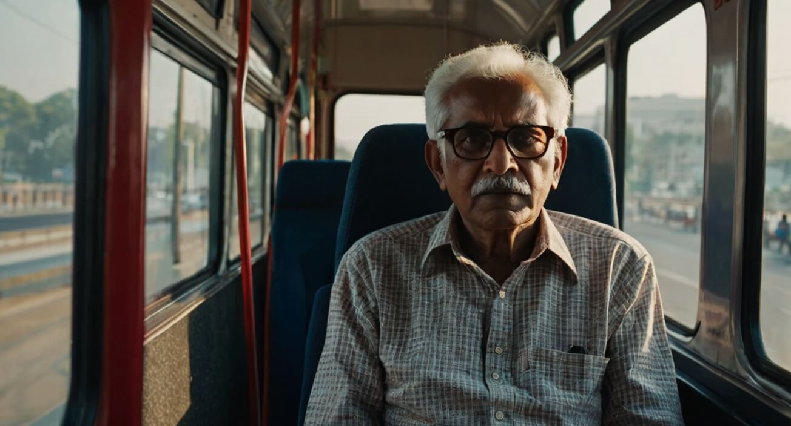

Ensuring that senior citizens are not isolated due to mobility issues or
financial constraints.

Indian Railways Facilities
Important Update: Please note
that fare discounts on railway tickets for senior citizens have been
suspended since the COVID-19 pandemic and are currently not active.
However, the Railways still provide critical facilities for seniors
(Men aged 60+, Women aged 58+):
Lower Berth Quota: Automatic preference for lower
berths is given to senior citizens traveling alone or with another
senior citizen.
Wheelchair Assistance: Battery Operated Vehicles
(BOVs) and wheelchair facilities are available at major railway
stations.
Separate Counters: Dedicated reservation counters
for senior citizens at major passenger reservation centers.
State Bus Transport (Maharashtra - MSRTC)
For daily and inter-city commutes, the Government of Maharashtra
offers vital benefits under specific state schemes:
Amrut Senior Citizen Scheme (75+ Years): Citizens
aged 75 and above are entitled to
100% free travel on all MSRTC (ST) buses across
Maharashtra upon showing a valid age ID (like Aadhaar).
Senior Citizen Discount (65 to 75 Years): Citizens
between 65 and 75 years receive a
50% ticket concession on MSRTC buses.
Reserved Seating: Specific seats are strictly
reserved for senior citizens in local city buses (like BEST in
Mumbai) to prevent them from having to stand during travel.
×
📝
Community Survey & Feedback
To better understand the needs of our elders, we have created an official community survey.
Please click the button below to share your thoughts or ask a question.